1. Introduction
This analysis employs the Mundell Fleming model to evaluate the economic and political policies of President Donald Trump and their effects on the U.S. economy, alongside projections for future implications. Trump’s “Make America Great Again” agenda promotes tax cuts for lower and middle classes, stringent immigration enforcement, enhanced domestic production, and reduced reliance on imports, with an intention to streamline government expenditure in certain areas. However, overall government spending has risen due to increased budgets for defence and immigration enforcement. Drawing on data from U.S. departments and the DXY (US Dollar Index) for exchange rates, this study explores impacts on output, exchange rates, and trade balances, identifying potential economic benefits and challenges.
2. Policies
2.1 Trade Policies
President Trump introduced tariffs to address trade deficits and stimulate U.S. GDP through greater domestic production. A 10% tariff applies to most imported goods, with higher rates of 30% for China and 25% for non compliant USMCA goods from Mexico and Canada, boosting exports and reducing imports (TariffCheck.org July 2025). Plans to escalate tariffs on August 1st to 50% for countries without trade deals could further increase consumer prices, potentially affecting economic dynamics.
2.2 One Big Beautiful Bill Act
The One Big Beautiful Bill Act implements significant tax cuts and reallocates government expenditure, yielding mixed economic outcomes. It extends the 2017 tax brackets, eliminates taxes on tips up and social security benefits, benefiting all income groups but particularly higher earners. Despite intentions to reduce government spending, overall expenditure has increased due to substantial allocations of $170 billion for immigration enforcement and $150 billion for defence, while funding for Medicaid, education, and clean energy has declined. Proposals to lower corporate taxes to 15% and replace income taxes with tariff revenue could add more than $5 trillion to deficits, posing risks to fiscal stability.
2.3 Immigration Policies
Stricter immigration enforcement aims to enhance national security but impacts labour markets. Mass deportations, projected at 500,000 annually, and expanded border security measures have significantly reduced border encounters, contributing to lower GDP through labour supply constraints. Plans to escalate deportations to 1 million per year and introduce ideological screenings may further reduce the labour force, potentially increasing economic challenges.
2.4 Exchange Rate
The U.S. dollar has depreciated, as reflected in the DXY, driven by economic instability from rising fiscal deficits due to increased government spending on defence and immigration enforcement, coupled with declining GDP and uncertainties from aggressive tariffs. Notably, countries like China and Japan have reduced their U.S. Treasury bond holdings, with China’s holdings dropping significantly and Japan also selling bonds, signalling concerns over U.S. debt sustainability amid trade tensions. A recent U.S. Treasury auction showed notably weak demand, underscoring diminished investor confidence, which has further pressured the dollar. This depreciation has boosted export competitiveness, improving the trade balance, but it also raises inflation risks and highlights challenges to the U.S. economy’s global standing.
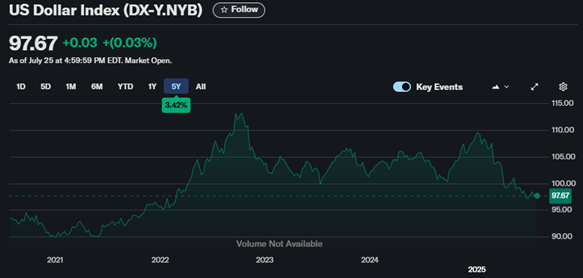
3. Mundell-Fleming Model
3.1 Assumptions
In order to accurately evaluate these policies using the Mundell Fleming model, the key assumptions must be taken into consideration.
Economy: The U.S. operates an open economy, engaging in significant international trade and capital flows, with exports and imports influenced by exchange rate changes, and domestic output levels.
Exchange Rate: The U.S. maintains a floating exchange rate, as evidenced by the DXY, allowing the U.S. dollar to adjust freely to balance trade and capital accounts, with recent depreciation enhancing export competitiveness.
Capital Mobility: The U.S. exhibits near perfect capital mobility, where capital flows don’t necessarily change due to interest rate changes, but the recent tariffs and uncertainty over the US economy has an effect, which results in a slightly upward-sloping balance of payments curve.
3.2 IS (Investment-Saving) Schedule
Variables:
Y (real income/GDP) – Although one of Trump’s objectives was to increase GDP, we can clearly see that this has actually decreased.
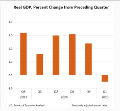
Leakages (S+M) and Injections (I+G+X) Imports (M) have decreased, while exports (X) have increased, decreasing the BoP deficit.
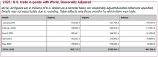
Government Expenditure (G) has also increased by 6%.
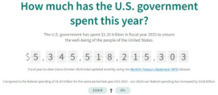
Interest rates (r) have decreased to ~4.5%, and suggestions have been made that they can be decreased even further (Reuters July 25, 2025).
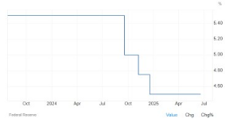
We must also consider that taxes have been reduced which in turn would increase net income. Another consideration must be made for expenditure, where we can see growth in the CPI has led to decreased consumer spending.
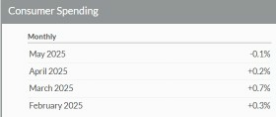
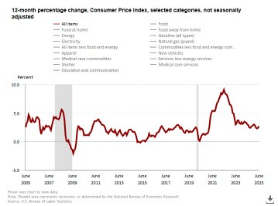
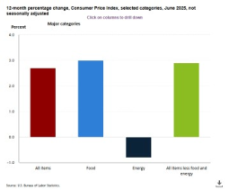
Using this data we can now find the IS schedule and work out any movement in the line.
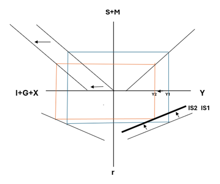
Here we can see that we have found that after the implementation of Trump’s policies the IS line will move to the left, suggesting that there is a decrease in the demand for goods in the market at any given interest rate.
Now we must also consider that movements will be made in order to decrease (G) Government expenditure, further decrease the trade deficit (through increased exports), reduction of tariffs, which will inadvertently increase M and decrease the CPI, which would increase consumption levels, and an increase in (I) investment which has slumped as of late due to the uncertainty in the US economy. When considering this, predictions could be made for the IS curve to move back to the right with further reduced interest rates, indicating increased demand for goods once again.
3.3 LM (Liquidity-Money Supply) Schedule
Variables:
Transaction money demand – this is the amount of money that is used for everyday transactions, we can see that with a lower Y (income) this value will also decrease.
Speculative money demand – this is the amount of money held as a store of value, when interest rates are low this value is high, as interest rates can be seen as an opportunity cost.
Y (income) and r (interest rate), which can have already been covered in the IS Schedule.
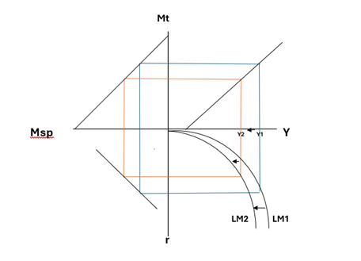
After examining the effects of Trump’s policies on the money market, we can now assess the LM schedule. Interest rates have decreased to around 4.5%, and further reductions have been proposed. Lower interest rates increase speculative demand for money, particularly as bond yields become less attractive. This causes greater demand for liquidity, especially at lower interest rates.
However, the rise in CPI indicates increasing price levels, which reduces real money balances. If the nominal money supply remains unchanged, this effectively shifts the LM curve to the left, reflecting tighter real monetary conditions at any given income level. Additionally, with GDP decreasing, we observe a movement down along the LM curve, as lower income reduces transaction demand for money and exerts less upward pressure on interest rates.
Looking to the future, it is expected that the US will continue to lower interest rates, and thus further decreasing Y. CPI looks like it will continue to rise, due to the total uncertainty of the US market with regard to tariffs. This will further reduce the transaction demand for money, and therefore more scepticism over future GDP growth. Compared to the IS schedule, the LM schedule is seemingly much more difficult to predict, largely due to the uncertainty about decisions being made by Trump and congress.
3.4 BP (Balance of Payments) Schedule
Variables :
CA (Current Account) is found by comparing exports and imports, here we can see that the number of exports is increasing compared to imports. Thus, meaning that we can assume that the value of CA is increasing and nearing a trade surplus.
K (Capital Account) is found by the net capital inflow multiplied by the difference between domestic and foreign interest rates. With the US having an increased amount of inflow compared to outflow recently, and an interest rate which is above the global average, it leads us to assume that K has increased.
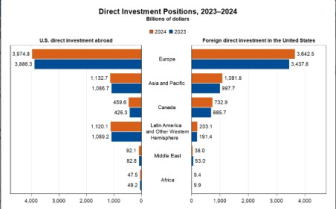
We can also assume that the slope of the BP line will by slightly upward sloped, as the US operated a near perfect capital mobility. I allocated a small slope as due to Trump’s policies, where capital flows may now indirectly change interest rates.
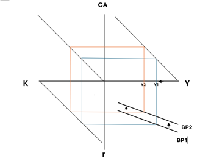
By analysing this BP schedule we can see that less income leads to more capital inflows. This is further influenced by tariffs as with less income you avoid imported goods and will opt to purchase cheaper domestic products or no longer buy these products at all if they are not necessary. The BP line shifting to the right indicates in order to maintain lower capital outflows that interest rates and income must also lower.
In the future, if interest rates keep being lowered, while tariffs are still in place, it would mean income would begin to suffer drastically. This would create a scary economy to live in where in order to grow the domestic market the economy must suffer on a macroeconomic level.
4. Conclusion
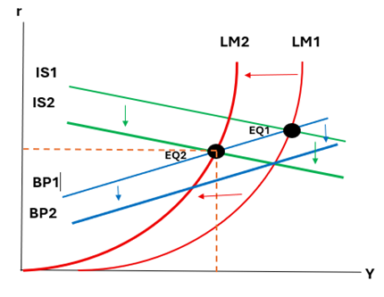
By completing this analysis and displaying an IS-LM-BP graph, we can see that while the U.S. economy is at an internal equilibrium (EQ2), it is no longer externally balanced, as EQ2 lies below the BP2 curve. This indicates that the U.S. is on a path toward a Balance of Payments surplus, largely due to increased exports, reduced imports, and higher capital inflows, all driven by protectionist trade policies and an inward focus on domestic economic performance. While these strategies may boost short-term internal stability, they have created external imbalances and uncertainty in global trade relations.
To restore full macroeconomic equilibrium, policy measures such as reducing tariffs, loosening monetary conditions, or allowing the U.S. dollar to appreciate may help reduce the surplus and rebalance capital flows, aligning the U.S. back with its external trading partners.